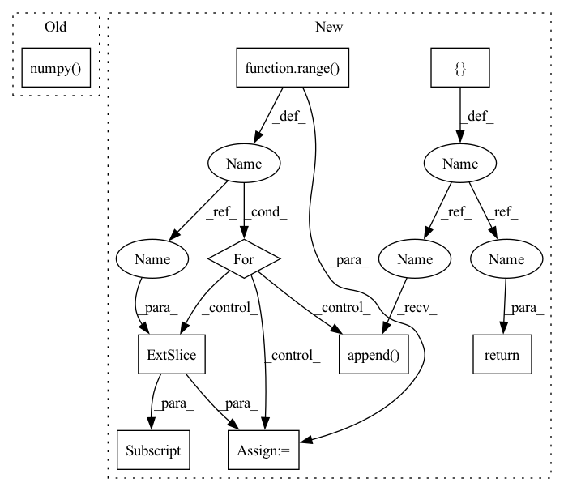

Pattern ID :18158

Before Change
for label in range(num_classes):
label_mask = labels == label
num_correct = (accuracy_mask & label_mask).numpy().sum()
num_label = label_mask.numpy().sum()
if num_label == 0:
per_class_accuracy = np.nan
else:
After Change
if self.confusion_matrix is None:
return None
accs = []
for label in range(self.num_classes):
tp = np.longlong(self.confusion_matrix[label, label])
fn = np.longlong(self.confusion_matrix[label, :].sum()) - tp
if tp + fn == 0:
acc = float("nan")
else:
acc = tp / (tp + fn)
accs.append(acc)
accs.append(np.nanmean(accs))
return accs
def iou(self):
Compute the per-class IoU and the mean IoU.
In pattern: SUPERPATTERN
Frequency: 3
Non-data size: 9
Instances
Fragment ID: 59579353
Project Name: intel-isl/open3d-ml
Commit Name: 67123f7e9d5dbbe6a73c42ef648093a7d25ace4a
Time: 2021-05-11
Author: sanskaragrawal107@gmail.com
File Name: ml3d/tf/modules/metrics/semseg_metric.py
M Class Name: SemSegMetric
N Class Name: SemSegMetric
M Method Name: acc(1)
N Method Name: acc(3)
M Parent Class: object
N Parent Class: object
M File Name: ml3d/tf/modules/metrics/semseg_metric.py
N File Name: ml3d/tf/modules/metrics/semseg_metric.py
M Start Line: 14
M End Line: 49
N Start Line: 25
N End Line: 55
'>
Before Change
for label in range(num_classes):
label_mask = labels == label
num_correct = (accuracy_mask & label_mask).numpy().sum()
num_label = label_mask.numpy().sum()
if num_label == 0:
per_class_accuracy = np.nan
After Change
if self.confusion_matrix is None:
return None
accs = []
for label in range(self.num_classes):
tp = np.longlong(self.confusion_matrix[label, label])
fn = np.longlong(self.confusion_matrix[label, :].sum()) - tp
if tp + fn == 0:
acc = float("nan")
else:
acc = tp / (tp + fn)
accs.append(acc)
accs.append(np.nanmean(accs))
return accs
def iou(self):
Compute the per-class IoU and the mean IoU.
'>
Fragment ID: 59579371
Project Name: isl-org/open3d-ml
Commit Name: 67123f7e9d5dbbe6a73c42ef648093a7d25ace4a
Time: 2021-05-11
Author: sanskaragrawal107@gmail.com
File Name: ml3d/tf/modules/metrics/semseg_metric.py
M Class Name: SemSegMetric
N Class Name: SemSegMetric
M Method Name: acc(1)
N Method Name: acc(3)
M Parent Class: object
N Parent Class: object
M File Name: ml3d/tf/modules/metrics/semseg_metric.py
N File Name: ml3d/tf/modules/metrics/semseg_metric.py
M Start Line: 14
M End Line: 49
N Start Line: 25
N End Line: 55
'>
Before Change
return pos_av, phot_sum
Threshold single px values
x_ = x.numpy()
self.matrix_extent = ((-0.5, x_.shape[0] - 0.5), (-0.5, x_.shape[1] - 0.5))
x_[x_ < self.single_val_threshold] = 0
cluster_frame, num_clusters = label(x_, self.kernel)
After Change
if x.dim() == 2:
x_ = x.unsqueeze(0).unsqueeze(0)
clusters = []
for i in range(x_.shape[0]):
Threshold single px values
x_ = x_[i, 0, :, :].numpy()
self.matrix_extent = ((-0.5, x_.shape[0] - 0.5), (-0.5, x_.shape[1] - 0.5))
x_[x_ < self.single_val_threshold] = 0
cluster_frame, num_clusters = label(x_, self.kernel)
// get the coordinates of the cluster members
clus_bool = cluster_frame >= 1
clus_ix = cluster_frame[clus_bool]
phot_in_clus = x_[clus_bool]
clus_mat_coord = np.asarray(np.asarray(clus_bool).nonzero()).transpose()
pos_clus, phot_clus = cluster_average(clus_mat_coord, phot_in_clus, clus_ix)
pos_clus, phot_clus = torch.from_numpy(pos_clus), torch.from_numpy(phot_clus)
// Transform coordinates
pos_clus = A2BTransform(a_extent=self.matrix_extent, b_extent=self.extent).a2b(pos_clus)
Filter by photon threshold
ix_above_thres = phot_clus > self.phot_thres
clusters.append(EmitterSet(xyz=pos_clus[ix_above_thres, :],
phot=phot_clus[ix_above_thres],
frame_ix=(torch.ones_like(phot_clus[ix_above_thres]) * (-1))))
return clusters
if __name__ == "__main__":
'>
Fragment ID: 59579394
Project Name: turagalab/decode
Commit Name: 0265ffe773d360ee51c95c0208a074d7f318620d
Time: 2019-04-12
Author: gitdev@LRM.photo
File Name: deepsmlm/neuralfitter/post_processing.py
M Class Name: ConnectedComponents
N Class Name: ConnectedComponents
M Method Name: forward(2)
N Method Name: forward(2)
M Parent Class:
N Parent Class:
M File Name: deepsmlm/neuralfitter/post_processing.py
N File Name: deepsmlm/neuralfitter/post_processing.py
M Start Line: 177
M End Line: 196
N Start Line: 181
N End Line: 213